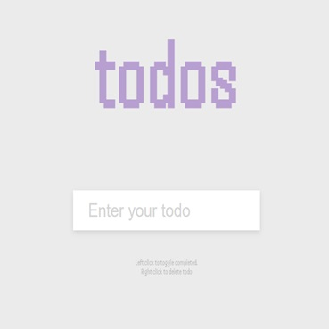

to-do list
As a student, there have been multiple occassions where I found myself annoyed by the unneeded compplexity and blot of productivity apps and websites. Thus, I have embark on a quest to make various productivity tools remove of the bloat and complexity. As I myself improve as Web Developer, I would like to expand the catalogue offered. For now, I've only adapted a very simple to-do list. Enjoy!
to-do list